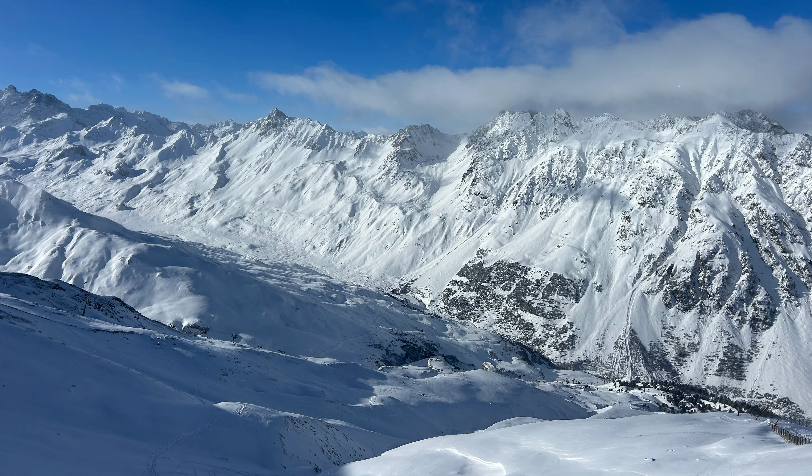

HEJ, JEG HEDDER MARIUS
PORTFOLIE
Mig der holder en and efter at være udnævnt til ande leder i Vietnam.
Mig der står på ski i Japans off piste.

Mig og en hjort som bukker for hinanden i byen Nara i Japan.